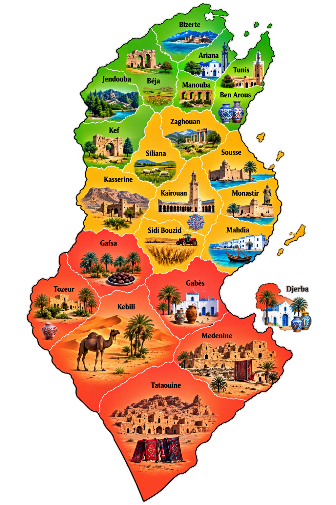

Tunisia is a Mediterranean gem known for its rich history, beautiful coastline, vibrant culture, and stunning Sahara landscapes.
From ancient ruins to picturesque seaside towns, it offers unforgettable experiences for every traveler.
